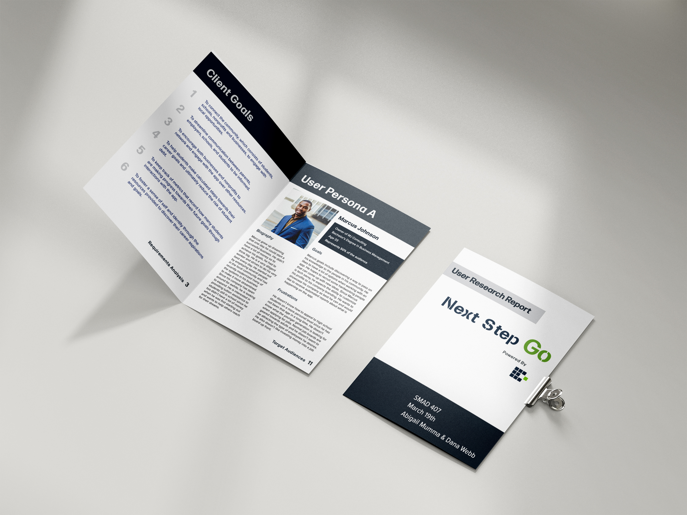

Next Step Go
Cued-In was seeking a digital product to support their vision of connecting students and local businesses for work, education, and scholarship opportunties.
- Client: Cued-In
- Timeframe: 2 months
.01 Research
Research was conducted with local businesses and Cued-In stakeholders. We discovered a sentiment amongst local business owners that quality employees were difficult to source in a small town.
How might we improve the experiences of local busiensses trying to communicate opportunities to the community in a quick, clear, and concise way?
Our research outputs included personas, design requirements, and a sitemap.
.02 Branding
Using our user research we dove right in to creating a new brand to support our app. Our first priority was a name and logo to center our vision of a locally-focused hub for stellar talent.

The existing Cued-In brand was fairly simplistic, so we focused our efforts on extending the font and color selection to be optimized for a web app.
.03 Design
Due to the accelerated nature of this project we opted to use low-fidelity wireframes. We iterated quickly through several options while collaborating with our dev team to determine feasibility for our key features.
We quickly pivoted into full fidelity comps following our initial wireframes. This was an extremely agile and iterative project, so you'll see significant developments and changes between the wires, comps, and final live site.

.03 Development
Alongside a team of five back-end developers, myself and another designer transformed our comps into live code.
As a development team we relied heavily on GitHub to collaborate and communicate code between the back and front end developers.
I used bootstrap to quickly get our front-end up and running, and then used SASS and JQuery to customize our site and add interactivity.
This part of the project was a great experience as a designer. I was able to make live changes in our development working sessions and think as both a designer and a developer.
My last humble brag is the card flip animation on our login/register page. Seeing this screen from conceptual wires to full-fledged code was an awesome opportunity.